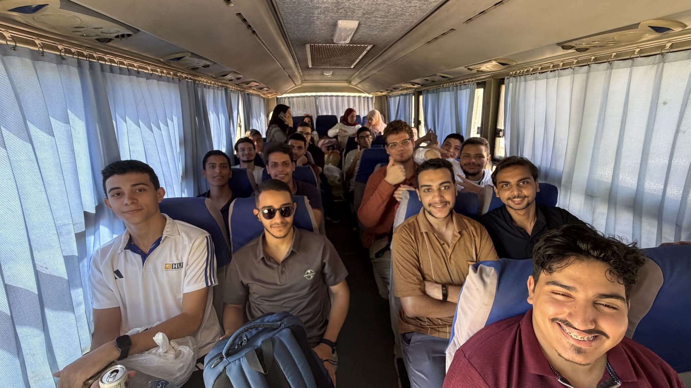
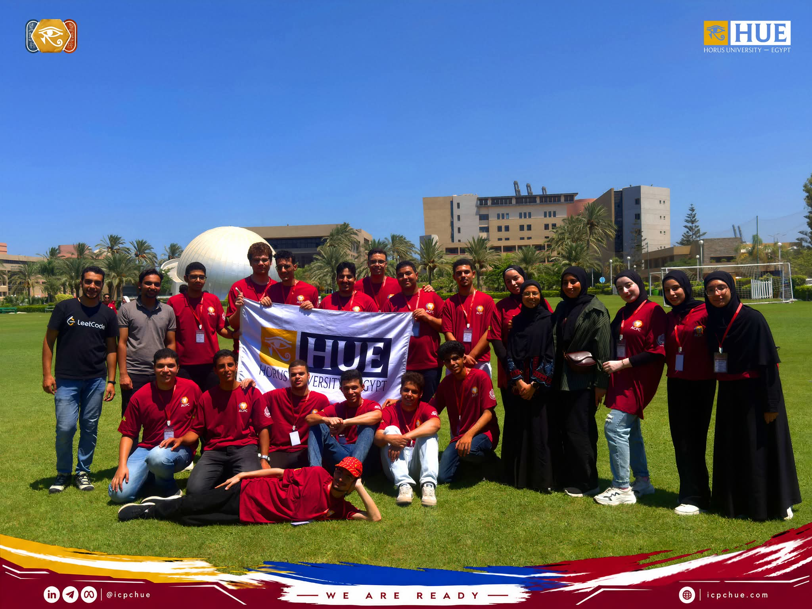

Horus University — Egypt • ICPC HUE Community
05 / Outreach & Momentum
A synchronized campaign published travel footage and updates, generating 43,000+ views on Facebook and establishing competitive programming as a recognized university endeavor.
Three professionally edited videos welcomed incoming freshmen, illustrating problem-solving concepts, showcasing student achievements, and outlining upcoming training cohorts.
Launched recruitment via icpchue.com/job for student instructors, mentors, media creators, and operations officers to formalize staffing.


The high-visibility media coverage and viral social media reception directly accelerated community recruitment for the 2026/2027 season. Over 300 prospective freshmen and returning students registered interest via icpchue.com/job within the first 72 hours, laying the groundwork for our largest and most competitive intake to date.